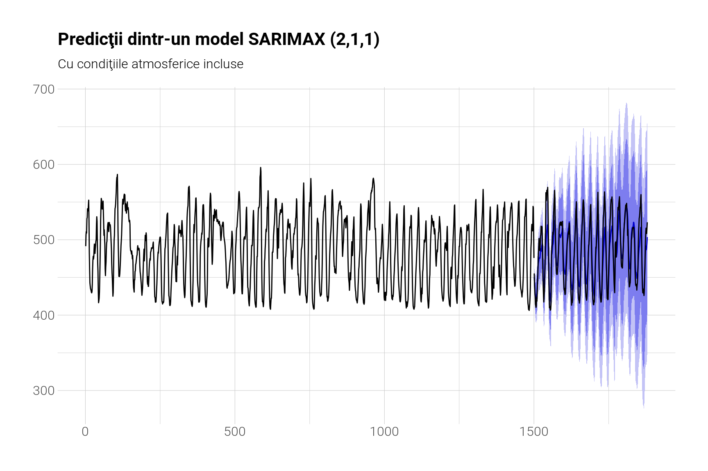

În acest articol vom investiga tiparele temporale ale poluării cu \(CO_2\) în Bucureşti. Folosim date de la aqicn.org pe care le accesăm prin interfaţa lor programatică. Datele au fost descărcate în fiecare zi de pe toată aria Bucureştiului şi salvate într-un repositoriu de pe Github folosind mecanismul lor automat numit Github Actions. Avem aşadar doar 14 staţii în tot Bucureştiul care măsoară concentraţia de \(CO_2\) la fiecare oră pe perioada studiului nostru de circa două luni jumătate (29 martie 2023 - 16 iunie 2023). Dar nu am descărcat numai datele referitoare la acest poluant ci şi alţii, precum şi temperatura la nivel de staţie, umiditatea, compuşi volatili organici (VOC), etc. Să vedem o matrice a corelaţiilor cu toţi aceşti indicatori pe această perioadă.
Vedem corelaţii foarte puternice, pozitive, între \(CO_2\) şi umiditate (met.h), \(O_3\) şi negative între \(CO_2\) şi temperatură (met.t). Particulele (pm-urile) se corelează aproape perfect între ele. Să vedem câteva trenduri agregate la nivel de Bucureşti.
Observăm nivele destul de mari de \(CO_2\) , valorile ajungând chiar şi la 600 ppm. Valoarea medie pe glob în 2022 este de 417 ppm şi a reprezentat un nou record. În Bucureşti media pe această perioadă este de 482 ppm. Aşadar, există amplitudini mari care par să aibă sezonalitate zilnică. Noaptea nivelul este mai ridicat, ziua mai scăzut. Să vizualizăm în aceeaşi scală valorile la \(CO_2\), temperatură şi umiditate. Vom standardiza datele ca să le putem vizualiza trendurile suprapuse în aceeaşi unitate de măsură (deviaţii standard). Vom vizualiza doar luna aprilie ca să ne facem o idee din grafic de corelaţiile seriilor de timp distincte.
Observăm cum temperatura e invers corelată cu \(CO_2\). Mai interesant, observăm cum episoadele de umiditate crescută şi constantă se asociază cu aceleaşi perioade în trendul de \(CO_2\). Acestea sunt ploile. Ploile rup întrerup practic sezonalitatea dioxidului de carbon, menţinându-l ridicat.
2 Analiza statistică
Acum vom încerca să prezicem nivelul orar de \(CO_2\) cu două modele bazate pe serii de timp: este vorba de ARIMA. Unul cu şi altul fără condiţiile atmosferice incluse. Ambele vor avea doi termeni periodici: un sinus şi un cosinus cu frecvenţa de 24 de ore - ca să surprindem sezonalitatea zilnică a valorilor. Practic modelele noastre sunt mai mult SARIMA şi SARIMAX (ARIMA cu sezonalitate şi regresori exogeni - adică condiţiile atmosferice, temperatura şi umiditatea). Vom vedea câtă precizie obţinem cu şi fără condiţiile atmosferice încercând să prezicem ultimele două săptămâni de date, oră cu oră. E cam mare perioada, dar datele au suficientă regularitate şi s-ar putea să iasă o precizie ridicată. În Figure 1 avem predicţiile fără condiţii atmosferice.
În Figure 2 avem predicţiile cu condiţiile atmosferice incluse. Evident, şi modelul are alţi coeficienţi pentru acei parametri comuni. Dacă primul model abia se descurcă, al doilea chiar prezice cu exactitate valorile orare ale nivelului de \(CO_2\) cu două săptămâni în viitor !
Code
forecast::forecast(arima_model, xreg=t(d_new)) %>%autoplot() +geom_line(data=enframe(test[,1]) %>%mutate(name=name+1500), aes(x=name, y=value)) +labs(title="Predicţii dintr-un model SARIMAX (2,1,1)", subtitle="Cu condiţiile atmosferice incluse", x=NULL, y=NULL)

Figure 2: Predicţii cu condiţii atmosferice
Avem o reducere în erorile de predicţie de circa 48.46 %. Dar acest factor nu reprezintă şi procentul de variabilitate explicată de condiţiile atmosferice, pentru că în primul model sezonalitatea are o influenţă mai mare, influenţă care ajustează cumva în mod ascuns şi pentru condiţiile atmosferice (şi ele sezoniere). În al doilea model efectul sinusoidelor este redus pentru că condiţiile atmosferice apar explicit şi reduc din efectul lor. Deci factorul acesta este unul care se referă la măsuri predictive, nu cauzale. Corelaţia între cele 300 şi ceva de puncte prezise de model şi realitate este de circa 0.92. Foarte mare. Oricum, putem concluziona că o parte semnificativă a variaţiilor zilnice ale nivelului de \(CO_2\) din Bucureşti este cauzat de condiţiile atmosferice mai degrabă decât de trafic. Traficul sigur că explică media în general ridicată din acest oraş, dar nu neapărat oscilaţiile în jurul acestei medii.